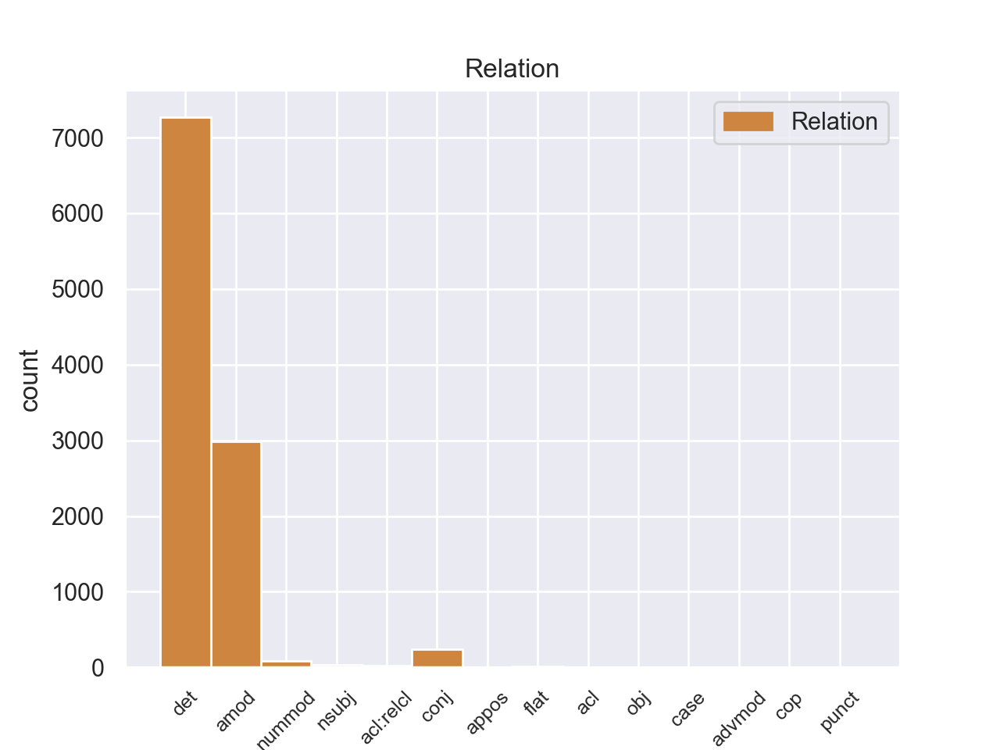
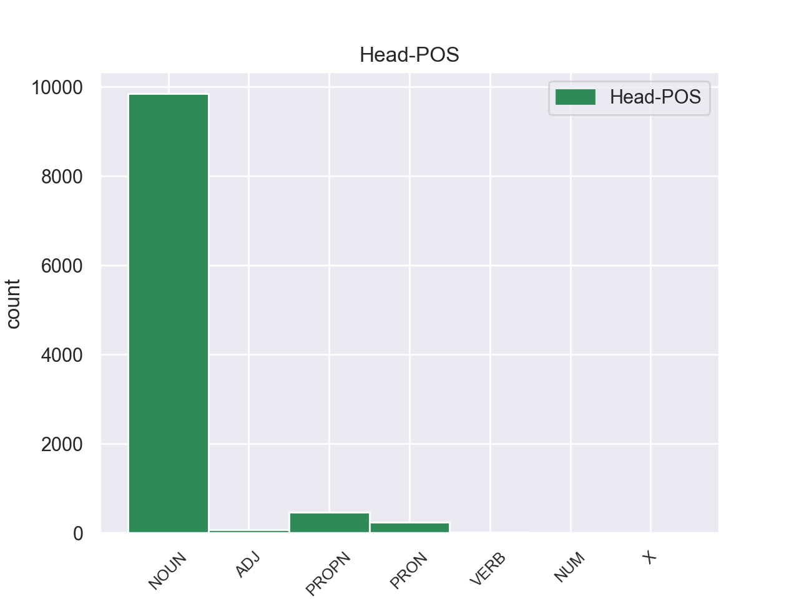
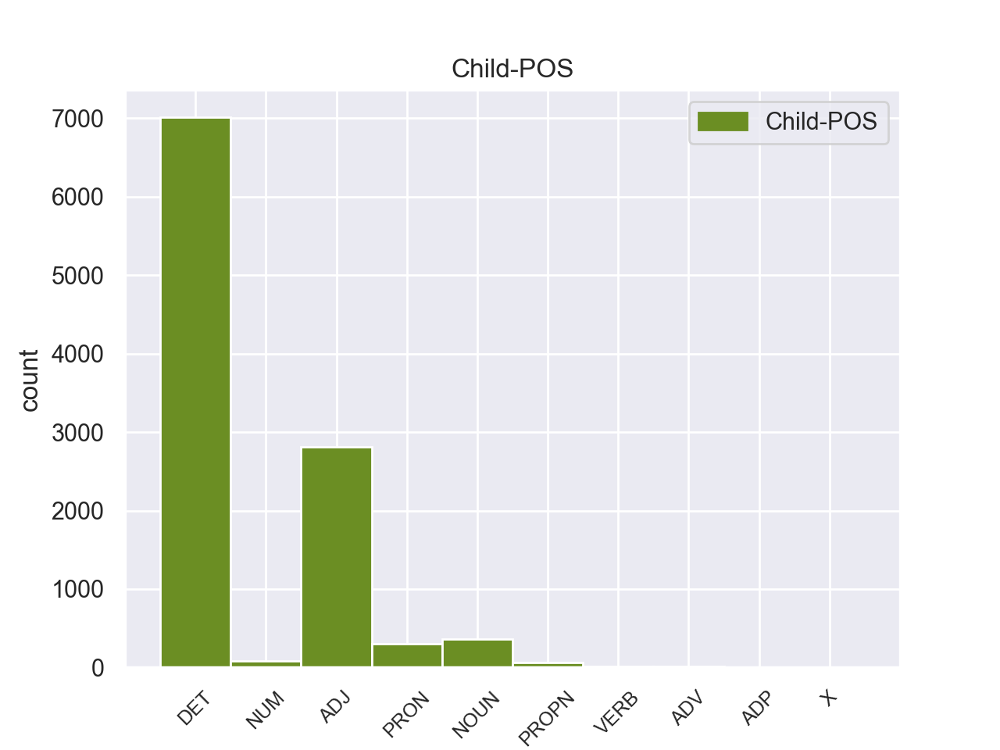

Distribution of features within this leaf



Agreement Rules sorted by frequency.
- When the dependent token is the determiner(det) of the head token, and the head token is NOUN
1 Αυτό _ _ _ _ 0 _ _ _
2 μπορεί _ _ _ _ 0 _ _ _
3 να _ _ _ _ 0 _ _ _
4 μην _ _ _ _ 0 _ _ _
5 οδηγήσει _ _ _ _ 0 _ _ _
6 σ _ _ _ _ 0 _ _ _
7 τη _ _ _ _ 0 _ _ _
8 λήξη _ _ _ _ 0 _ _ _
9 του _ _ _ _ 0 _ _ _
10 εν _ _ _ _ 0 _ _ _
11 λόγω _ _ _ _ 0 _ _ _
12 ζητήματος _ _ _ _ 0 _ _ _
13 αλλά _ _ _ _ 0 _ _ _
14 , _ _ _ _ 0 _ _ _
15 σ _ _ _ _ 0 _ _ _
16 τη _ _ _ _ 0 _ _ _
17 μορφή _ _ _ _ 0 _ _ _
18 υπό _ _ _ _ 0 _ _ _
19 την _ _ _ _ 0 _ _ _
20 οποία _ _ _ _ 0 _ _ _
21 την _ _ _ _ 0 _ _ _
22 λάβαμε _ _ _ _ 0 _ _ _
23 , _ _ _ _ 0 _ _ _
24 αυτή _ _ _ _ 0 _ _ _
25 η _ _ _ _ 0 _ _ _
26 αίτηση _ _ _ _ 0 _ _ _
27 άρσης _ _ _ _ 0 _ _ _
28 της _ _ _ _ 0 _ _ _
29 ασυλίας _ _ _ _ 0 _ _ _
30 ήταν _ _ _ _ 0 _ _ _
31 , _ _ _ _ 0 _ _ _
32 κατά _ _ _ _ 0 _ _ _
33 την _ _ _ _ 0 _ _ _
34 άποψη _ _ _ _ 0 _ _ _
35 της _ _ _ _ 0 _ _ _
36 Επιτροπής _ _ _ _ 0 _ _ _
37 Νομικών _ _ _ _ 0 _ _ _
38 Θεμάτων _ _ _ _ 0 _ _ _
39 , _ _ _ _ 0 _ _ _
40 απαράδεκτη _ _ _ _ 0 _ _ _
41 , _ _ _ _ 0 _ _ _
42 άποψη _ _ _ _ 0 _ _ _
43 την _ _ _ _ 0 _ _ _
44 οποία _ _ _ _ 0 _ _ _
45 συνιστώ _ _ _ _ 0 _ _ _
46 σ _ _ _ _ 0 _ _ _
47 το ο DET _ Case=Acc|Gender=Neut|Number=Sing 48 det _ _
48 Σώμα σώμα NOUN _ Case=Acc|Gender=Neut|Number=Sing 0 _ _ _
49 να _ _ _ _ 0 _ _ _
50 υιοθετήσει _ _ _ _ 0 _ _ _
51 . _ _ _ _ 0 _ _ _
1 Αυτό _ _ _ _ 0 _ _ _
2 μπορεί _ _ _ _ 0 _ _ _
3 να _ _ _ _ 0 _ _ _
4 μην _ _ _ _ 0 _ _ _
5 οδηγήσει _ _ _ _ 0 _ _ _
6 σ _ _ _ _ 0 _ _ _
7 τη _ _ _ _ 0 _ _ _
8 λήξη _ _ _ _ 0 _ _ _
9 του _ _ _ _ 0 _ _ _
10 εν _ _ _ _ 0 _ _ _
11 λόγω _ _ _ _ 0 _ _ _
12 ζητήματος _ _ _ _ 0 _ _ _
13 αλλά _ _ _ _ 0 _ _ _
14 , _ _ _ _ 0 _ _ _
15 σ _ _ _ _ 0 _ _ _
16 τη _ _ _ _ 0 _ _ _
17 μορφή _ _ _ _ 0 _ _ _
18 υπό _ _ _ _ 0 _ _ _
19 την _ _ _ _ 0 _ _ _
20 οποία _ _ _ _ 0 _ _ _
21 την _ _ _ _ 0 _ _ _
22 λάβαμε _ _ _ _ 0 _ _ _
23 , _ _ _ _ 0 _ _ _
24 αυτή _ _ _ _ 0 _ _ _
25 η _ _ _ _ 0 _ _ _
26 αίτηση _ _ _ _ 0 _ _ _
27 άρσης _ _ _ _ 0 _ _ _
28 της _ _ _ _ 0 _ _ _
29 ασυλίας _ _ _ _ 0 _ _ _
30 ήταν _ _ _ _ 0 _ _ _
31 , _ _ _ _ 0 _ _ _
32 κατά _ _ _ _ 0 _ _ _
33 την _ _ _ _ 0 _ _ _
34 άποψη _ _ _ _ 0 _ _ _
35 της _ _ _ _ 0 _ _ _
36 Επιτροπής _ _ _ _ 0 _ _ _
37 Νομικών _ _ _ _ 0 _ _ _
38 Θεμάτων _ _ _ _ 0 _ _ _
39 , _ _ _ _ 0 _ _ _
40 απαράδεκτη απαράδεκτη ADJ _ Case=Acc|Gender=Fem|Number=Sing 42 amod _ _
41 , _ _ _ _ 0 _ _ _
42 άποψη άποψη NOUN _ Case=Acc|Gender=Fem|Number=Sing 0 _ _ _
43 την _ _ _ _ 0 _ _ _
44 οποία _ _ _ _ 0 _ _ _
45 συνιστώ _ _ _ _ 0 _ _ _
46 σ _ _ _ _ 0 _ _ _
47 το _ _ _ _ 0 _ _ _
48 Σώμα _ _ _ _ 0 _ _ _
49 να _ _ _ _ 0 _ _ _
50 υιοθετήσει _ _ _ _ 0 _ _ _
51 . _ _ _ _ 0 _ _ _
1 Ο _ _ _ _ 0 _ _ _
2 Εισαγγελέας _ _ _ _ 0 _ _ _
3 σ _ _ _ _ 0 _ _ _
4 τη ο DET _ Case=Acc|Definite=Def|Gender=Fem|Number=Sing|PronType=Art 5 det _ _
5 Γαλλία γαλλία PROPN _ Case=Acc|Gender=Fem|Number=Sing 0 _ _ _
6 έχει _ _ _ _ 0 _ _ _
7 το _ _ _ _ 0 _ _ _
8 δικαίωμα _ _ _ _ 0 _ _ _
9 να _ _ _ _ 0 _ _ _
10 εκπληρώνει _ _ _ _ 0 _ _ _
11 τα _ _ _ _ 0 _ _ _
12 καθήκοντά _ _ _ _ 0 _ _ _
13 του _ _ _ _ 0 _ _ _
14 βάσει _ _ _ _ 0 _ _ _
15 του _ _ _ _ 0 _ _ _
16 νόμου _ _ _ _ 0 _ _ _
17 και _ _ _ _ 0 _ _ _
18 το _ _ _ _ 0 _ _ _
19 Σώμα _ _ _ _ 0 _ _ _
20 δεν _ _ _ _ 0 _ _ _
21 λαμβάνει _ _ _ _ 0 _ _ _
22 θέση _ _ _ _ 0 _ _ _
23 σχετικά _ _ _ _ 0 _ _ _
24 με _ _ _ _ 0 _ _ _
25 αυτό _ _ _ _ 0 _ _ _
26 . _ _ _ _ 0 _ _ _
1 Θα _ _ _ _ 0 _ _ _
2 ήθελα _ _ _ _ 0 _ _ _
3 να _ _ _ _ 0 _ _ _
4 επιστήσω _ _ _ _ 0 _ _ _
5 την _ _ _ _ 0 _ _ _
6 προσοχή _ _ _ _ 0 _ _ _
7 όλων _ _ _ _ 0 _ _ _
8 των _ _ _ _ 0 _ _ _
9 συναδέλφων _ _ _ _ 0 _ _ _
10 σ _ _ _ _ 0 _ _ _
11 το _ _ _ _ 0 _ _ _
12 γεγονός _ _ _ _ 0 _ _ _
13 ότι _ _ _ _ 0 _ _ _
14 , _ _ _ _ 0 _ _ _
15 εάν _ _ _ _ 0 _ _ _
16 υπάρχουν _ _ _ _ 0 _ _ _
17 κάποιες _ _ _ _ 0 _ _ _
18 ελευθερίες _ _ _ _ 0 _ _ _
19 οι _ _ _ _ 0 _ _ _
20 οποίες _ _ _ _ 0 _ _ _
21 είναι _ _ _ _ 0 _ _ _
22 ζωτικής _ _ _ _ 0 _ _ _
23 σημασίας σημασίας NOUN _ Case=Acc|Gender=Fem|Number=Sing 0 _ _ _
24 για _ _ _ _ 0 _ _ _
25 την _ _ _ _ 0 _ _ _
26 άσκηση _ _ _ _ 0 _ _ _
27 του _ _ _ _ 0 _ _ _
28 λειτουργήματος _ _ _ _ 0 _ _ _
29 της _ _ _ _ 0 _ _ _
30 δημόσιας _ _ _ _ 0 _ _ _
31 εκπροσώπησης _ _ _ _ 0 _ _ _
32 , _ _ _ _ 0 _ _ _
33 ιδίως _ _ _ _ 0 _ _ _
34 για _ _ _ _ 0 _ _ _
35 ένα _ _ _ _ 0 _ _ _
36 Κοινοβούλιο _ _ _ _ 0 _ _ _
37 σαν _ _ _ _ 0 _ _ _
38 το _ _ _ _ 0 _ _ _
39 δικό _ _ _ _ 0 _ _ _
40 μας _ _ _ _ 0 _ _ _
41 , _ _ _ _ 0 _ _ _
42 η _ _ _ _ 0 _ _ _
43 ελευθερία _ _ _ _ 0 _ _ _
44 της _ _ _ _ 0 _ _ _
45 επικοινωνίας _ _ _ _ 0 _ _ _
46 με _ _ _ _ 0 _ _ _
47 άλλους _ _ _ _ 0 _ _ _
48 πολίτες _ _ _ _ 0 _ _ _
49 και _ _ _ _ 0 _ _ _
50 με _ _ _ _ 0 _ _ _
51 τους _ _ _ _ 0 _ _ _
52 πολίτες _ _ _ _ 0 _ _ _
53 τρίτων _ _ _ _ 0 _ _ _
54 χωρών _ _ _ _ 0 _ _ _
55 , _ _ _ _ 0 _ _ _
56 καθώς _ _ _ _ 0 _ _ _
57 και _ _ _ _ 0 _ _ _
58 η _ _ _ _ 0 _ _ _
59 ελευθερία ελευθερία NOUN _ Case=Acc|Gender=Fem|Number=Sing 23 conj _ _
60 μετακίνησης _ _ _ _ 0 _ _ _
61 , _ _ _ _ 0 _ _ _
62 είναι _ _ _ _ 0 _ _ _
63 κρίσιμες _ _ _ _ 0 _ _ _
64 για _ _ _ _ 0 _ _ _
65 τη _ _ _ _ 0 _ _ _
66 διεκπεραίωση _ _ _ _ 0 _ _ _
67 του _ _ _ _ 0 _ _ _
68 έργου _ _ _ _ 0 _ _ _
69 μας _ _ _ _ 0 _ _ _
70 . _ _ _ _ 0 _ _ _
1 Αυτό _ _ _ _ 0 _ _ _
2 μπορεί _ _ _ _ 0 _ _ _
3 να _ _ _ _ 0 _ _ _
4 μην _ _ _ _ 0 _ _ _
5 οδηγήσει _ _ _ _ 0 _ _ _
6 σ _ _ _ _ 0 _ _ _
7 τη _ _ _ _ 0 _ _ _
8 λήξη _ _ _ _ 0 _ _ _
9 του _ _ _ _ 0 _ _ _
10 εν _ _ _ _ 0 _ _ _
11 λόγω _ _ _ _ 0 _ _ _
12 ζητήματος _ _ _ _ 0 _ _ _
13 αλλά _ _ _ _ 0 _ _ _
14 , _ _ _ _ 0 _ _ _
15 σ _ _ _ _ 0 _ _ _
16 τη _ _ _ _ 0 _ _ _
17 μορφή _ _ _ _ 0 _ _ _
18 υπό _ _ _ _ 0 _ _ _
19 την ο DET _ Case=Acc|Gender=Fem|Number=Sing 20 det _ _
20 οποία οποία PRON _ Case=Acc|Gender=Fem|Number=Sing 0 _ _ _
21 την _ _ _ _ 0 _ _ _
22 λάβαμε _ _ _ _ 0 _ _ _
23 , _ _ _ _ 0 _ _ _
24 αυτή _ _ _ _ 0 _ _ _
25 η _ _ _ _ 0 _ _ _
26 αίτηση _ _ _ _ 0 _ _ _
27 άρσης _ _ _ _ 0 _ _ _
28 της _ _ _ _ 0 _ _ _
29 ασυλίας _ _ _ _ 0 _ _ _
30 ήταν _ _ _ _ 0 _ _ _
31 , _ _ _ _ 0 _ _ _
32 κατά _ _ _ _ 0 _ _ _
33 την _ _ _ _ 0 _ _ _
34 άποψη _ _ _ _ 0 _ _ _
35 της _ _ _ _ 0 _ _ _
36 Επιτροπής _ _ _ _ 0 _ _ _
37 Νομικών _ _ _ _ 0 _ _ _
38 Θεμάτων _ _ _ _ 0 _ _ _
39 , _ _ _ _ 0 _ _ _
40 απαράδεκτη _ _ _ _ 0 _ _ _
41 , _ _ _ _ 0 _ _ _
42 άποψη _ _ _ _ 0 _ _ _
43 την _ _ _ _ 0 _ _ _
44 οποία _ _ _ _ 0 _ _ _
45 συνιστώ _ _ _ _ 0 _ _ _
46 σ _ _ _ _ 0 _ _ _
47 το _ _ _ _ 0 _ _ _
48 Σώμα _ _ _ _ 0 _ _ _
49 να _ _ _ _ 0 _ _ _
50 υιοθετήσει _ _ _ _ 0 _ _ _
51 . _ _ _ _ 0 _ _ _
1 πρόκειται _ _ _ _ 0 _ _ _
2 για _ _ _ _ 0 _ _ _
3 αυτό _ _ _ _ 0 _ _ _
4 το _ _ _ _ 0 _ _ _
5 οποίο _ _ _ _ 0 _ _ _
6 αποκαλύφθηκε _ _ _ _ 0 _ _ _
7 κατά _ _ _ _ 0 _ _ _
8 τη _ _ _ _ 0 _ _ _
9 διάρκεια _ _ _ _ 0 _ _ _
10 αυτής _ _ _ _ 0 _ _ _
11 της _ _ _ _ 0 _ _ _
12 διαδικασίας _ _ _ _ 0 _ _ _
13 , _ _ _ _ 0 _ _ _
14 ότι _ _ _ _ 0 _ _ _
15 ο _ _ _ _ 0 _ _ _
16 Εισαγγελέας _ _ _ _ 0 _ _ _
17 κάποια _ _ _ _ 0 _ _ _
18 στιγμή _ _ _ _ 0 _ _ _
19 ζήτησε _ _ _ _ 0 _ _ _
20 από _ _ _ _ 0 _ _ _
21 την _ _ _ _ 0 _ _ _
22 Πρόεδρο _ _ _ _ 0 _ _ _
23 του _ _ _ _ 0 _ _ _
24 Σώματος _ _ _ _ 0 _ _ _
25 , _ _ _ _ 0 _ _ _
26 την _ _ _ _ 0 _ _ _
27 προκάτοχό _ _ _ _ 0 _ _ _
28 σας _ _ _ _ 0 _ _ _
29 , _ _ _ _ 0 _ _ _
30 λεπτομέρειες _ _ _ _ 0 _ _ _
31 για _ _ _ _ 0 _ _ _
32 την _ _ _ _ 0 _ _ _
33 ψήφο _ _ _ _ 0 _ _ _
34 που _ _ _ _ 0 _ _ _
35 έχουν _ _ _ _ 0 _ _ _
36 δώσει _ _ _ _ 0 _ _ _
37 οι _ _ _ _ 0 _ _ _
38 δύο δος ADJ _ Case=Acc|Gender=Masc|Number=Plur 40 nummod _ _
39 συγκεκριμένοι _ _ _ _ 0 _ _ _
40 βουλευτές βουλευτα NOUN _ Case=Acc|Gender=Masc|Number=Plur 0 _ _ _
41 προκειμένου _ _ _ _ 0 _ _ _
42 να _ _ _ _ 0 _ _ _
43 διευκρινιστεί _ _ _ _ 0 _ _ _
44 περαιτέρω _ _ _ _ 0 _ _ _
45 η _ _ _ _ 0 _ _ _
46 πιθανότητα _ _ _ _ 0 _ _ _
47 να _ _ _ _ 0 _ _ _
48 είχαν _ _ _ _ 0 _ _ _
49 ασκήσει _ _ _ _ 0 _ _ _
50 αθέμιτη _ _ _ _ 0 _ _ _
51 επιρροή _ _ _ _ 0 _ _ _
52 . _ _ _ _ 0 _ _ _
1 Επίσης _ _ _ _ 0 _ _ _
2 καταδικάστηκαν _ _ _ _ 0 _ _ _
3 , _ _ _ _ 0 _ _ _
4 σε _ _ _ _ 0 _ _ _
5 18 _ _ _ _ 0 _ _ _
6 μήνες _ _ _ _ 0 _ _ _
7 φυλάκιση _ _ _ _ 0 _ _ _
8 , _ _ _ _ 0 _ _ _
9 ένας _ _ _ _ 0 _ _ _
10 αξιωματούχος _ _ _ _ 0 _ _ _
11 του _ _ _ _ 0 _ _ _
12 Γραφείου _ _ _ _ 0 _ _ _
13 Τύπου _ _ _ _ 0 _ _ _
14 των ο DET _ Case=Gen|Definite=Def|Gender=Fem|Number=Plur|PronType=Art 15 det _ _
15 Βαλεαρίδων βαλεαρίδός ADJ _ Case=Gen|Gender=Fem|Number=Sing 0 _ _ _
16 Νήσων _ _ _ _ 0 _ _ _
17 και _ _ _ _ 0 _ _ _
18 ένας _ _ _ _ 0 _ _ _
19 επικεφαλής _ _ _ _ 0 _ _ _
20 μιας _ _ _ _ 0 _ _ _
21 υπηρεσίας _ _ _ _ 0 _ _ _
22 εποικονωνίας _ _ _ _ 0 _ _ _
23 . _ _ _ _ 0 _ _ _
1 Σημαντικό _ _ _ _ 0 _ _ _
2 είναι _ _ _ _ 0 _ _ _
3 και _ _ _ _ 0 _ _ _
4 το _ _ _ _ 0 _ _ _
5 αρχαιολογικό _ _ _ _ 0 _ _ _
6 μουσείο _ _ _ _ 0 _ _ _
7 Κέρκυρας _ _ _ _ 0 _ _ _
8 , _ _ _ _ 0 _ _ _
9 σ _ _ _ _ 0 _ _ _
10 το _ _ _ _ 0 _ _ _
11 οποίο _ _ _ _ 0 _ _ _
12 φιλοξενούνται _ _ _ _ 0 _ _ _
13 ευρήματα _ _ _ _ 0 _ _ _
14 από _ _ _ _ 0 _ _ _
15 ανασκαφές _ _ _ _ 0 _ _ _
16 σ _ _ _ _ 0 _ _ _
17 την _ _ _ _ 0 _ _ _
18 Κέρκυρα Κέρκυρα PROPN _ Case=Acc|Gender=Fem|Number=Sing 0 _ _ _
19 και _ _ _ _ 0 _ _ _
20 τη _ _ _ _ 0 _ _ _
21 Θεσπρωτία Θεσπρωτία PROPN _ Case=Acc|Gender=Fem|Number=Sing 18 conj _ _
22 και _ _ _ _ 0 _ _ _
23 το _ _ _ _ 0 _ _ _
24 σπίτι _ _ _ _ 0 _ _ _
25 του _ _ _ _ 0 _ _ _
26 Διονυσίου _ _ _ _ 0 _ _ _
27 Σολωμού _ _ _ _ 0 _ _ _
28 , _ _ _ _ 0 _ _ _
29 το _ _ _ _ 0 _ _ _
30 οποίο _ _ _ _ 0 _ _ _
31 λειτουργεί _ _ _ _ 0 _ _ _
32 ως _ _ _ _ 0 _ _ _
33 μουσείο _ _ _ _ 0 _ _ _
34 . _ _ _ _ 0 _ _ _
1 Η _ _ _ _ 0 _ _ _
2 Κυβέρνηση _ _ _ _ 0 _ _ _
3 της _ _ _ _ 0 _ _ _
4 Βόρειας Βόρειας ADJ _ Case=Gen|Gender=Fem|Number=Sing 5 amod _ _
5 Κορέας Κορέας PROPN _ Case=Gen|Gender=Fem|Number=Sing 0 _ _ _
6 απαγορεύει _ _ _ _ 0 _ _ _
7 σ _ _ _ _ 0 _ _ _
8 την _ _ _ _ 0 _ _ _
9 πλειοψηφία _ _ _ _ 0 _ _ _
10 των _ _ _ _ 0 _ _ _
11 πολιτών _ _ _ _ 0 _ _ _
12 να _ _ _ _ 0 _ _ _
13 έχουν _ _ _ _ 0 _ _ _
14 πρόσβαση _ _ _ _ 0 _ _ _
15 σ _ _ _ _ 0 _ _ _
16 το _ _ _ _ 0 _ _ _
17 διαδίκτυο _ _ _ _ 0 _ _ _
18 , _ _ _ _ 0 _ _ _
19 για _ _ _ _ 0 _ _ _
20 να _ _ _ _ 0 _ _ _
21 τους _ _ _ _ 0 _ _ _
22 προστατέψει _ _ _ _ 0 _ _ _
23 , _ _ _ _ 0 _ _ _
24 όπως _ _ _ _ 0 _ _ _
25 αναφέρει _ _ _ _ 0 _ _ _
26 , _ _ _ _ 0 _ _ _
27 από _ _ _ _ 0 _ _ _
28 τις _ _ _ _ 0 _ _ _
29 εξωτερικές _ _ _ _ 0 _ _ _
30 επιρροές _ _ _ _ 0 _ _ _
31 . _ _ _ _ 0 _ _ _
1 Η _ _ _ _ 0 _ _ _
2 Μπενφίκα _ _ _ _ 0 _ _ _
3 ήταν _ _ _ _ 0 _ _ _
4 πιο _ _ _ _ 0 _ _ _
5 επιθετική επιθετική ADJ _ Case=Nom|Gender=Fem|Number=Sing 0 _ _ _
6 και _ _ _ _ 0 _ _ _
7 καλύτερη καλύτερη ADJ _ Case=Nom|Gender=Fem|Number=Sing 5 conj _ _
8 σ _ _ _ _ 0 _ _ _
9 το _ _ _ _ 0 _ _ _
10 πρώτο _ _ _ _ 0 _ _ _
11 ημίχρονο _ _ _ _ 0 _ _ _
12 , _ _ _ _ 0 _ _ _
13 με _ _ _ _ 0 _ _ _
14 αποτέλεσμα _ _ _ _ 0 _ _ _
15 να _ _ _ _ 0 _ _ _
16 ανοίξει _ _ _ _ 0 _ _ _
17 το _ _ _ _ 0 _ _ _
18 σκορ _ _ _ _ 0 _ _ _
19 σ _ _ _ _ 0 _ _ _
20 το _ _ _ _ 0 _ _ _
21 πρώτο _ _ _ _ 0 _ _ _
22 λεπτό _ _ _ _ 0 _ _ _
23 των _ _ _ _ 0 _ _ _
24 καθυστερήσεων _ _ _ _ 0 _ _ _
25 , _ _ _ _ 0 _ _ _
26 χάρη _ _ _ _ 0 _ _ _
27 σ _ _ _ _ 0 _ _ _
28 τον _ _ _ _ 0 _ _ _
29 Μάξι _ _ _ _ 0 _ _ _
30 Περέιρα _ _ _ _ 0 _ _ _
31 . _ _ _ _ 0 _ _ _
1 Αυτό _ _ _ _ 0 _ _ _
2 μπορεί _ _ _ _ 0 _ _ _
3 να _ _ _ _ 0 _ _ _
4 μην _ _ _ _ 0 _ _ _
5 οδηγήσει _ _ _ _ 0 _ _ _
6 σ _ _ _ _ 0 _ _ _
7 τη _ _ _ _ 0 _ _ _
8 λήξη _ _ _ _ 0 _ _ _
9 του _ _ _ _ 0 _ _ _
10 εν _ _ _ _ 0 _ _ _
11 λόγω _ _ _ _ 0 _ _ _
12 ζητήματος _ _ _ _ 0 _ _ _
13 αλλά _ _ _ _ 0 _ _ _
14 , _ _ _ _ 0 _ _ _
15 σ _ _ _ _ 0 _ _ _
16 τη _ _ _ _ 0 _ _ _
17 μορφή μορφή NOUN _ Case=Acc|Gender=Fem|Number=Sing 0 _ _ _
18 υπό _ _ _ _ 0 _ _ _
19 την _ _ _ _ 0 _ _ _
20 οποία _ _ _ _ 0 _ _ _
21 την _ _ _ _ 0 _ _ _
22 λάβαμε λάβαμε VERB _ Case=Acc|Gender=Fem|Number=Sing 17 acl:relcl _ _
23 , _ _ _ _ 0 _ _ _
24 αυτή _ _ _ _ 0 _ _ _
25 η _ _ _ _ 0 _ _ _
26 αίτηση _ _ _ _ 0 _ _ _
27 άρσης _ _ _ _ 0 _ _ _
28 της _ _ _ _ 0 _ _ _
29 ασυλίας _ _ _ _ 0 _ _ _
30 ήταν _ _ _ _ 0 _ _ _
31 , _ _ _ _ 0 _ _ _
32 κατά _ _ _ _ 0 _ _ _
33 την _ _ _ _ 0 _ _ _
34 άποψη _ _ _ _ 0 _ _ _
35 της _ _ _ _ 0 _ _ _
36 Επιτροπής _ _ _ _ 0 _ _ _
37 Νομικών _ _ _ _ 0 _ _ _
38 Θεμάτων _ _ _ _ 0 _ _ _
39 , _ _ _ _ 0 _ _ _
40 απαράδεκτη _ _ _ _ 0 _ _ _
41 , _ _ _ _ 0 _ _ _
42 άποψη _ _ _ _ 0 _ _ _
43 την _ _ _ _ 0 _ _ _
44 οποία _ _ _ _ 0 _ _ _
45 συνιστώ _ _ _ _ 0 _ _ _
46 σ _ _ _ _ 0 _ _ _
47 το _ _ _ _ 0 _ _ _
48 Σώμα _ _ _ _ 0 _ _ _
49 να _ _ _ _ 0 _ _ _
50 υιοθετήσει _ _ _ _ 0 _ _ _
51 . _ _ _ _ 0 _ _ _
1 Σ _ _ _ _ 0 _ _ _
2 τα _ _ _ _ 0 _ _ _
3 ανατολικά _ _ _ _ 0 _ _ _
4 της _ _ _ _ 0 _ _ _
5 πόλης _ _ _ _ 0 _ _ _
6 της _ _ _ _ 0 _ _ _
7 Κέρκυρας _ _ _ _ 0 _ _ _
8 βρίσκεται _ _ _ _ 0 _ _ _
9 το _ _ _ _ 0 _ _ _
10 Παλαιό _ _ _ _ 0 _ _ _
11 Φρούριο _ _ _ _ 0 _ _ _
12 , _ _ _ _ 0 _ _ _
13 χτισμένο _ _ _ _ 0 _ _ _
14 τα _ _ _ _ 0 _ _ _
15 μέσα _ _ _ _ 0 _ _ _
16 του ο DET _ Case=Gen|Definite=Def|Gender=Neut|Number=Sing|PronType=Art 17 det _ _
17 16ου 16ου NUM _ Case=Gen|Gender=Fem|Number=Sing 0 _ _ _
18 αιώνα _ _ _ _ 0 _ _ _
19 , _ _ _ _ 0 _ _ _
20 εντός _ _ _ _ 0 _ _ _
21 του _ _ _ _ 0 _ _ _
22 οποίου _ _ _ _ 0 _ _ _
23 μπορεί _ _ _ _ 0 _ _ _
24 κάποιος _ _ _ _ 0 _ _ _
25 να _ _ _ _ 0 _ _ _
26 δει _ _ _ _ 0 _ _ _
27 το _ _ _ _ 0 _ _ _
28 ναό _ _ _ _ 0 _ _ _
29 του _ _ _ _ 0 _ _ _
30 Αγίου _ _ _ _ 0 _ _ _
31 Γεωργίου _ _ _ _ 0 _ _ _
32 - _ _ _ _ 0 _ _ _
33 μοναδική _ _ _ _ 0 _ _ _
34 παγκοσμίως _ _ _ _ 0 _ _ _
35 ορθόδοξη _ _ _ _ 0 _ _ _
36 εκκλησία _ _ _ _ 0 _ _ _
37 δωρικού _ _ _ _ 0 _ _ _
38 ρυθμού _ _ _ _ 0 _ _ _
39 - _ _ _ _ 0 _ _ _
40 και _ _ _ _ 0 _ _ _
41 τους _ _ _ _ 0 _ _ _
42 παλιούς _ _ _ _ 0 _ _ _
43 αγγλικούς _ _ _ _ 0 _ _ _
44 στρατώνες _ _ _ _ 0 _ _ _
45 . _ _ _ _ 0 _ _ _
1 Η _ _ _ _ 0 _ _ _
2 Μπενφίκα Μπενφίκα PROPN _ Case=Nom|Gender=Fem|Number=Sing 5 nsubj _ _
3 ήταν _ _ _ _ 0 _ _ _
4 πιο _ _ _ _ 0 _ _ _
5 επιθετική επιθετική ADJ _ Case=Nom|Gender=Fem|Number=Sing 0 _ _ _
6 και _ _ _ _ 0 _ _ _
7 καλύτερη _ _ _ _ 0 _ _ _
8 σ _ _ _ _ 0 _ _ _
9 το _ _ _ _ 0 _ _ _
10 πρώτο _ _ _ _ 0 _ _ _
11 ημίχρονο _ _ _ _ 0 _ _ _
12 , _ _ _ _ 0 _ _ _
13 με _ _ _ _ 0 _ _ _
14 αποτέλεσμα _ _ _ _ 0 _ _ _
15 να _ _ _ _ 0 _ _ _
16 ανοίξει _ _ _ _ 0 _ _ _
17 το _ _ _ _ 0 _ _ _
18 σκορ _ _ _ _ 0 _ _ _
19 σ _ _ _ _ 0 _ _ _
20 το _ _ _ _ 0 _ _ _
21 πρώτο _ _ _ _ 0 _ _ _
22 λεπτό _ _ _ _ 0 _ _ _
23 των _ _ _ _ 0 _ _ _
24 καθυστερήσεων _ _ _ _ 0 _ _ _
25 , _ _ _ _ 0 _ _ _
26 χάρη _ _ _ _ 0 _ _ _
27 σ _ _ _ _ 0 _ _ _
28 τον _ _ _ _ 0 _ _ _
29 Μάξι _ _ _ _ 0 _ _ _
30 Περέιρα _ _ _ _ 0 _ _ _
31 . _ _ _ _ 0 _ _ _
1 Ο _ _ _ _ 0 _ _ _
2 λόγος _ _ _ _ 0 _ _ _
3 γίνεται _ _ _ _ 0 _ _ _
4 για _ _ _ _ 0 _ _ _
5 τον _ _ _ _ 0 _ _ _
6 Χάουμε _ _ _ _ 0 _ _ _
7 Μάτας _ _ _ _ 0 _ _ _
8 , _ _ _ _ 0 _ _ _
9 ο _ _ _ _ 0 _ _ _
10 οποίος οποίος PRON _ Case=Nom|Gender=Masc|Number=Sing|Person=3|PronType=Rel 12 nsubj _ _
11 ήταν _ _ _ _ 0 _ _ _
12 Υπουργός υπουργός NOUN _ Case=Nom|Gender=Masc|Number=Sing 0 _ _ _
13 Περιβάλλοντος _ _ _ _ 0 _ _ _
14 τα _ _ _ _ 0 _ _ _
15 έτη _ _ _ _ 0 _ _ _
16 2000-2003 _ _ _ _ 0 _ _ _
17 και _ _ _ _ 0 _ _ _
18 Περιφερειακός _ _ _ _ 0 _ _ _
19 Πρωθυπουργός _ _ _ _ 0 _ _ _
20 των _ _ _ _ 0 _ _ _
21 Βαλεαρίδων _ _ _ _ 0 _ _ _
22 Νήσων _ _ _ _ 0 _ _ _
23 κατά _ _ _ _ 0 _ _ _
24 την _ _ _ _ 0 _ _ _
25 περίοδο _ _ _ _ 0 _ _ _
26 2003-2007 _ _ _ _ 0 _ _ _
27 . _ _ _ _ 0 _ _ _
1 Παρόμοιο _ _ _ _ 0 _ _ _
2 καθεστώς _ _ _ _ 0 _ _ _
3 επιδιώκουν _ _ _ _ 0 _ _ _
4 και _ _ _ _ 0 _ _ _
5 οι _ _ _ _ 0 _ _ _
6 πόλεις _ _ _ _ 0 _ _ _
7 σ _ _ _ _ 0 _ _ _
8 τα _ _ _ _ 0 _ _ _
9 ανατολικά _ _ _ _ 0 _ _ _
10 της _ _ _ _ 0 _ _ _
11 Λιβύης _ _ _ _ 0 _ _ _
12 , _ _ _ _ 0 _ _ _
13 οι _ _ _ _ 0 _ _ _
14 οποίες οποίες PRON _ Case=Nom|Gender=Masc|Number=Sing|Person=3|PronType=Rel 16 nsubj _ _
15 είναι _ _ _ _ 0 _ _ _
16 πλούσιες πλούσιες VERB _ Case=Nom|Gender=Fem|Number=Plur 0 _ _ _
17 σε _ _ _ _ 0 _ _ _
18 κοιτάσματα _ _ _ _ 0 _ _ _
19 πετρελαίου _ _ _ _ 0 _ _ _
20 . _ _ _ _ 0 _ _ _
1 Από _ _ _ _ 0 _ _ _
2 τη _ _ _ _ 0 _ _ _
3 πλευρά _ _ _ _ 0 _ _ _
4 του _ _ _ _ 0 _ _ _
5 ο _ _ _ _ 0 _ _ _
6 Πρωθυπουργός πρωθυπουργός NOUN _ Case=Nom|Gender=Masc|Number=Sing 0 _ _ _
7 του _ _ _ _ 0 _ _ _
8 Ισραήλ _ _ _ _ 0 _ _ _
9 , _ _ _ _ 0 _ _ _
10 Βενιαμίν Βενιαμίν X _ Case=Nom|Gender=Masc|Number=Sing 6 appos _ _
11 Νετανιάχου _ _ _ _ 0 _ _ _
12 , _ _ _ _ 0 _ _ _
13 εξέφρασε _ _ _ _ 0 _ _ _
14 ικανοποίηση _ _ _ _ 0 _ _ _
15 για _ _ _ _ 0 _ _ _
16 το _ _ _ _ 0 _ _ _
17 σχόλιο _ _ _ _ 0 _ _ _
18 του _ _ _ _ 0 _ _ _
19 Μπαράκ _ _ _ _ 0 _ _ _
20 Ομπάμα _ _ _ _ 0 _ _ _
21 ότι _ _ _ _ 0 _ _ _
22 « _ _ _ _ 0 _ _ _
23 θα _ _ _ _ 0 _ _ _
24 εξεταστούν _ _ _ _ 0 _ _ _
25 όλες _ _ _ _ 0 _ _ _
26 οι _ _ _ _ 0 _ _ _
27 εναλλακτικές _ _ _ _ 0 _ _ _
28 λύσεις _ _ _ _ 0 _ _ _
29 αναφορικά _ _ _ _ 0 _ _ _
30 με _ _ _ _ 0 _ _ _
31 το _ _ _ _ 0 _ _ _
32 πυρηνικό _ _ _ _ 0 _ _ _
33 πρόγραμμα _ _ _ _ 0 _ _ _
34 του _ _ _ _ 0 _ _ _
35 Ιράν _ _ _ _ 0 _ _ _
36 » _ _ _ _ 0 _ _ _
37 . _ _ _ _ 0 _ _ _
1 Η _ _ _ _ 0 _ _ _
2 Χίλαρι Χίλαρι PROPN PROPN Case=Nom|Gender=Fem|Number=Sing 0 _ _ _
3 Κλίντον Κλίντον PROPN PROPN Case=Nom|Gender=Fem|Number=Sing 2 flat _ _
4 χαρακτήρισε _ _ _ _ 0 _ _ _
5 την _ _ _ _ 0 _ _ _
6 εξέλιξη _ _ _ _ 0 _ _ _
7 " _ _ _ _ 0 _ _ _
8 ορόσημο _ _ _ _ 0 _ _ _
9 " _ _ _ _ 0 _ _ _
10 . _ _ _ _ 0 _ _ _
1 Ο ο DET _ Case=Nom|Definite=Def|Gender=Masc|Number=Sing|PronType=Art 2 det _ _
2 Χάουμε Χάουμε X _ Case=Nom|Gender=Masc|Number=Sing 0 _ _ _
3 Μάτας _ _ _ _ 0 _ _ _
4 είχε _ _ _ _ 0 _ _ _
5 λάβει _ _ _ _ 0 _ _ _
6 παρανόμως _ _ _ _ 0 _ _ _
7 500.000 _ _ _ _ 0 _ _ _
8 ευρώ _ _ _ _ 0 _ _ _
9 ( _ _ _ _ 0 _ _ _
10 δημόσια _ _ _ _ 0 _ _ _
11 χρήματα _ _ _ _ 0 _ _ _
12 ) _ _ _ _ 0 _ _ _
13 , _ _ _ _ 0 _ _ _
14 για _ _ _ _ 0 _ _ _
15 να _ _ _ _ 0 _ _ _
16 πληρώσει _ _ _ _ 0 _ _ _
17 δημοσιογράφο _ _ _ _ 0 _ _ _
18 που _ _ _ _ 0 _ _ _
19 έγραφε _ _ _ _ 0 _ _ _
20 τις _ _ _ _ 0 _ _ _
21 ομιλίες _ _ _ _ 0 _ _ _
22 του _ _ _ _ 0 _ _ _
23 . _ _ _ _ 0 _ _ _
1 Σημαντικό _ _ _ _ 0 _ _ _
2 είναι _ _ _ _ 0 _ _ _
3 και _ _ _ _ 0 _ _ _
4 το _ _ _ _ 0 _ _ _
5 αρχαιολογικό _ _ _ _ 0 _ _ _
6 μουσείο _ _ _ _ 0 _ _ _
7 Κέρκυρας _ _ _ _ 0 _ _ _
8 , _ _ _ _ 0 _ _ _
9 σ _ _ _ _ 0 _ _ _
10 το _ _ _ _ 0 _ _ _
11 οποίο _ _ _ _ 0 _ _ _
12 φιλοξενούνται _ _ _ _ 0 _ _ _
13 ευρήματα _ _ _ _ 0 _ _ _
14 από _ _ _ _ 0 _ _ _
15 ανασκαφές _ _ _ _ 0 _ _ _
16 σ _ _ _ _ 0 _ _ _
17 την _ _ _ _ 0 _ _ _
18 Κέρκυρα _ _ _ _ 0 _ _ _
19 και _ _ _ _ 0 _ _ _
20 τη _ _ _ _ 0 _ _ _
21 Θεσπρωτία _ _ _ _ 0 _ _ _
22 και _ _ _ _ 0 _ _ _
23 το _ _ _ _ 0 _ _ _
24 σπίτι _ _ _ _ 0 _ _ _
25 του _ _ _ _ 0 _ _ _
26 Διονυσίου Διονυσίου NOUN _ Case=Gen|Gender=Masc|Number=Sing 0 _ _ _
27 Σολωμού Σολωμού PROPN _ Case=Gen|Gender=Fem|Number=Sing 26 flat _ _
28 , _ _ _ _ 0 _ _ _
29 το _ _ _ _ 0 _ _ _
30 οποίο _ _ _ _ 0 _ _ _
31 λειτουργεί _ _ _ _ 0 _ _ _
32 ως _ _ _ _ 0 _ _ _
33 μουσείο _ _ _ _ 0 _ _ _
34 . _ _ _ _ 0 _ _ _
1 Επίσης _ _ _ _ 0 _ _ _
2 , _ _ _ _ 0 _ _ _
3 περίπου _ _ _ _ 0 _ _ _
4 7,5 _ _ _ _ 0 _ _ _
5 εκατομμύρια _ _ _ _ 0 _ _ _
6 Κινέζοι _ _ _ _ 0 _ _ _
7 έχουν _ _ _ _ 0 _ _ _
8 ανταποκριθεί _ _ _ _ 0 _ _ _
9 σ _ _ _ _ 0 _ _ _
10 τα _ _ _ _ 0 _ _ _
11 κίνητρα _ _ _ _ 0 _ _ _
12 της _ _ _ _ 0 _ _ _
13 κυβέρνησης _ _ _ _ 0 _ _ _
14 για _ _ _ _ 0 _ _ _
15 αποικισμό _ _ _ _ 0 _ _ _
16 του _ _ _ _ 0 _ _ _
17 Θιβέτ _ _ _ _ 0 _ _ _
18 , _ _ _ _ 0 _ _ _
19 ξεπερνώντας _ _ _ _ 0 _ _ _
20 τους _ _ _ _ 0 _ _ _
21 6 _ _ _ _ 0 _ _ _
22 εκατομμύρια εκατομμύρια ADJ _ Case=Acc|Gender=Masc|Number=Plur 23 amod _ _
23 Θιβετιανούς Θιβετιανούς ADJ _ Case=Acc|Gender=Masc|Number=Plur 0 _ _ _
24 . _ _ _ _ 0 _ _ _
1 Ωστόσο _ _ _ _ 0 _ _ _
2 , _ _ _ _ 0 _ _ _
3 εκφράζω _ _ _ _ 0 _ _ _
4 ανησυχία _ _ _ _ 0 _ _ _
5 όσον _ _ _ _ 0 _ _ _
6 αφορά _ _ _ _ 0 _ _ _
7 το _ _ _ _ 0 _ _ _
8 ζήτημα _ _ _ _ 0 _ _ _
9 μιας _ _ _ _ 0 _ _ _
10 δικαστικής _ _ _ _ 0 _ _ _
11 απόφασης _ _ _ _ 0 _ _ _
12 που _ _ _ _ 0 _ _ _
13 δεν _ _ _ _ 0 _ _ _
14 είναι _ _ _ _ 0 _ _ _
15 ακόμη _ _ _ _ 0 _ _ _
16 τελεσίδικη _ _ _ _ 0 _ _ _
17 : _ _ _ _ 0 _ _ _
18 ενεργούμε _ _ _ _ 0 _ _ _
19 ως _ _ _ _ 0 _ _ _
20 δικαστής _ _ _ _ 0 _ _ _
21 και _ _ _ _ 0 _ _ _
22 ένορκοι _ _ _ _ 0 _ _ _
23 αν _ _ _ _ 0 _ _ _
24 αρνηθούμε _ _ _ _ 0 _ _ _
25 σε _ _ _ _ 0 _ _ _
26 κάποιον _ _ _ _ 0 _ _ _
27 το _ _ _ _ 0 _ _ _
28 δικαίωμα _ _ _ _ 0 _ _ _
29 να _ _ _ _ 0 _ _ _
30 είναι _ _ _ _ 0 _ _ _
31 υποψήφιος _ _ _ _ 0 _ _ _
32 για _ _ _ _ 0 _ _ _
33 μια _ _ _ _ 0 _ _ _
34 σύμβαση _ _ _ _ 0 _ _ _
35 χωρίς _ _ _ _ 0 _ _ _
36 να _ _ _ _ 0 _ _ _
37 έχει _ _ _ _ 0 _ _ _
38 εκδοθεί εκδοθεί VERB _ Case=Acc|Gender=Fem|Number=Sing 0 _ _ _
39 τελική _ _ _ _ 0 _ _ _
40 απόφαση απόφαση NOUN _ Case=Acc|Gender=Fem|Number=Sing 38 obj _ _
41 ή _ _ _ _ 0 _ _ _
42 να _ _ _ _ 0 _ _ _
43 έχει _ _ _ _ 0 _ _ _
44 γίνει _ _ _ _ 0 _ _ _
45 ανάλυση _ _ _ _ 0 _ _ _
46 ως _ _ _ _ 0 _ _ _
47 προς _ _ _ _ 0 _ _ _
48 το _ _ _ _ 0 _ _ _
49 αν _ _ _ _ 0 _ _ _
50 ένα _ _ _ _ 0 _ _ _
51 άτομο _ _ _ _ 0 _ _ _
52 είναι _ _ _ _ 0 _ _ _
53 ένοχο _ _ _ _ 0 _ _ _
54 για _ _ _ _ 0 _ _ _
55 ένα _ _ _ _ 0 _ _ _
56 αδίκημα _ _ _ _ 0 _ _ _
57 ή _ _ _ _ 0 _ _ _
58 όχι _ _ _ _ 0 _ _ _
59 . _ _ _ _ 0 _ _ _
1 Αξιωματούχοι _ _ _ _ 0 _ _ _
2 της _ _ _ _ 0 _ _ _
3 Υεμένης _ _ _ _ 0 _ _ _
4 και _ _ _ _ 0 _ _ _
5 γιατροί _ _ _ _ 0 _ _ _
6 ανέφεραν _ _ _ _ 0 _ _ _
7 ότι _ _ _ _ 0 _ _ _
8 « _ _ _ _ 0 _ _ _
9 άγριες _ _ _ _ 0 _ _ _
10 συμπλοκές _ _ _ _ 0 _ _ _
11 μεταξύ μεταξύ ADP _ Case=Gen|Definite=Def|Gender=Fem|Number=Plur|PronType=Art 13 case _ _
12 κυβερνητικών _ _ _ _ 0 _ _ _
13 δυνάμεων δυνάμεός NOUN _ Case=Gen|Gender=Fem|Number=Plur 0 _ _ _
14 και _ _ _ _ 0 _ _ _
15 μαχητών _ _ _ _ 0 _ _ _
16 της _ _ _ _ 0 _ _ _
17 Αλ _ _ _ _ 0 _ _ _
18 Κάιντα _ _ _ _ 0 _ _ _
19 σ _ _ _ _ 0 _ _ _
20 το _ _ _ _ 0 _ _ _
21 νότο _ _ _ _ 0 _ _ _
22 της _ _ _ _ 0 _ _ _
23 χώρας _ _ _ _ 0 _ _ _
24 είχαν _ _ _ _ 0 _ _ _
25 σαν _ _ _ _ 0 _ _ _
26 αποτέλεσμα _ _ _ _ 0 _ _ _
27 να _ _ _ _ 0 _ _ _
28 χάσουν _ _ _ _ 0 _ _ _
29 την _ _ _ _ 0 _ _ _
30 ζωή _ _ _ _ 0 _ _ _
31 τους _ _ _ _ 0 _ _ _
32 35 _ _ _ _ 0 _ _ _
33 στρατιώτες _ _ _ _ 0 _ _ _
34 και _ _ _ _ 0 _ _ _
35 20 _ _ _ _ 0 _ _ _
36 ένοπλοι _ _ _ _ 0 _ _ _
37 » _ _ _ _ 0 _ _ _
38 . _ _ _ _ 0 _ _ _
1 Συνειδητοποιώ _ _ _ _ 0 _ _ _
2 με _ _ _ _ 0 _ _ _
3 ανακούφιση _ _ _ _ 0 _ _ _
4 ότι _ _ _ _ 0 _ _ _
5 δεν _ _ _ _ 0 _ _ _
6 είμαι _ _ _ _ 0 _ _ _
7 ο _ _ _ _ 0 _ _ _
8 αρμόδιος _ _ _ _ 0 _ _ _
9 Επίτροπος _ _ _ _ 0 _ _ _
10 ούτε _ _ _ _ 0 _ _ _
11 για _ _ _ _ 0 _ _ _
12 τη _ _ _ _ 0 _ _ _
13 φορολογία _ _ _ _ 0 _ _ _
14 ούτε _ _ _ _ 0 _ _ _
15 για _ _ _ _ 0 _ _ _
16 τη _ _ _ _ 0 _ _ _
17 νομισματική _ _ _ _ 0 _ _ _
18 ένωση _ _ _ _ 0 _ _ _
19 , _ _ _ _ 0 _ _ _
20 αλλά _ _ _ _ 0 _ _ _
21 απλά _ _ _ _ 0 _ _ _
22 ο _ _ _ _ 0 _ _ _
23 Επίτροπος _ _ _ _ 0 _ _ _
24 για _ _ _ _ 0 _ _ _
25 την _ _ _ _ 0 _ _ _
26 ταπεινή _ _ _ _ 0 _ _ _
27 πολιτική _ _ _ _ 0 _ _ _
28 ανταγωνισμού _ _ _ _ 0 _ _ _
29 η _ _ _ _ 0 _ _ _
30 οποία _ _ _ _ 0 _ _ _
31 , _ _ _ _ 0 _ _ _
32 παρόλα _ _ _ _ 0 _ _ _
33 ταύτα _ _ _ _ 0 _ _ _
34 , _ _ _ _ 0 _ _ _
35 έχει _ _ _ _ 0 _ _ _
36 να _ _ _ _ 0 _ _ _
37 διαδραματίσει _ _ _ _ 0 _ _ _
38 ένα _ _ _ _ 0 _ _ _
39 ρόλο _ _ _ _ 0 _ _ _
40 και _ _ _ _ 0 _ _ _
41 προσπαθεί _ _ _ _ 0 _ _ _
42 να _ _ _ _ 0 _ _ _
43 τον _ _ _ _ 0 _ _ _
44 διαδραματίσει _ _ _ _ 0 _ _ _
45 δραστήρια _ _ _ _ 0 _ _ _
46 - _ _ _ _ 0 _ _ _
47 με _ _ _ _ 0 _ _ _
48 την _ _ _ _ 0 _ _ _
49 υποστήριξη _ _ _ _ 0 _ _ _
50 του _ _ _ _ 0 _ _ _
51 Κοινοβουλίου _ _ _ _ 0 _ _ _
52 , _ _ _ _ 0 _ _ _
53 η _ _ _ _ 0 _ _ _
54 οποία _ _ _ _ 0 _ _ _
55 είναι _ _ _ _ 0 _ _ _
56 εμφανής _ _ _ _ 0 _ _ _
57 για _ _ _ _ 0 _ _ _
58 μία _ _ _ _ 0 _ _ _
59 ακόμη ακόμη ADV _ Case=Acc|Gender=Fem|Number=Sing 60 advmod _ _
60 φορά φορά NOUN _ Case=Acc|Gender=Fem|Number=Sing 0 _ _ _
61 σήμερα _ _ _ _ 0 _ _ _
62 . _ _ _ _ 0 _ _ _
1 Εφόσον _ _ _ _ 0 _ _ _
2 , _ _ _ _ 0 _ _ _
3 κύριε _ _ _ _ 0 _ _ _
4 Επίτροπε _ _ _ _ 0 _ _ _
5 , _ _ _ _ 0 _ _ _
6 σ _ _ _ _ 0 _ _ _
7 τα _ _ _ _ 0 _ _ _
8 κράτη _ _ _ _ 0 _ _ _
9 μέλη _ _ _ _ 0 _ _ _
10 - _ _ _ _ 0 _ _ _
11 και _ _ _ _ 0 _ _ _
12 γνωρίζω _ _ _ _ 0 _ _ _
13 ότι _ _ _ _ 0 _ _ _
14 αυτό _ _ _ _ 0 _ _ _
15 δεν _ _ _ _ 0 _ _ _
16 αποτελεί _ _ _ _ 0 _ _ _
17 δική _ _ _ _ 0 _ _ _
18 σας _ _ _ _ 0 _ _ _
19 αρμοδιότητα _ _ _ _ 0 _ _ _
20 - _ _ _ _ 0 _ _ _
21 ισχύουν _ _ _ _ 0 _ _ _
22 διαφορετικές _ _ _ _ 0 _ _ _
23 προδιαγραφές _ _ _ _ 0 _ _ _
24 για _ _ _ _ 0 _ _ _
25 τον _ _ _ _ 0 _ _ _
26 αριθμό _ _ _ _ 0 _ _ _
27 χιλιομέτρων _ _ _ _ 0 _ _ _
28 ανά _ _ _ _ 0 _ _ _
29 ώρα _ _ _ _ 0 _ _ _
30 που _ _ _ _ 0 _ _ _
31 επιτρέπεται _ _ _ _ 0 _ _ _
32 να _ _ _ _ 0 _ _ _
33 οδηγεί _ _ _ _ 0 _ _ _
34 ένας _ _ _ _ 0 _ _ _
35 οδηγός _ _ _ _ 0 _ _ _
36 , _ _ _ _ 0 _ _ _
37 όλα όλος ADJ ADJ Case=Nom|Gender=Neut|Number=Plur 38 amod _ _
38 αυτά αυτός PRON PRON Case=Nom|Gender=Neut|Number=Plur|Person=3|PronType=Dem 0 _ _ _
39 δεν _ _ _ _ 0 _ _ _
40 θα _ _ _ _ 0 _ _ _
41 έχουν _ _ _ _ 0 _ _ _
42 κανένα _ _ _ _ 0 _ _ _
43 νόημα _ _ _ _ 0 _ _ _
44 . _ _ _ _ 0 _ _ _
1 Ο _ _ _ _ 0 _ _ _
2 βιότοπος _ _ _ _ 0 _ _ _
3 των _ _ _ _ 0 _ _ _
4 Κουκουναριών _ _ _ _ 0 _ _ _
5 είναι _ _ _ _ 0 _ _ _
6 ένας _ _ _ _ 0 _ _ _
7 από _ _ _ _ 0 _ _ _
8 τους _ _ _ _ 0 _ _ _
9 τρεις τρεος NUM _ Case=Acc|Gender=Fem|Number=Plur 10 nummod _ _
10 σημαντικότερους σημαντικότερους ADJ _ Case=Acc|Gender=Fem|Number=Plur 0 _ _ _
11 της _ _ _ _ 0 _ _ _
12 χώρας _ _ _ _ 0 _ _ _
13 . _ _ _ _ 0 _ _ _
1 Μετά _ _ _ _ 0 _ _ _
2 τον _ _ _ _ 0 _ _ _
3 θάνατο _ _ _ _ 0 _ _ _
4 του _ _ _ _ 0 _ _ _
5 Οσάμα _ _ _ _ 0 _ _ _
6 μπιν _ _ _ _ 0 _ _ _
7 Λάντεν _ _ _ _ 0 _ _ _
8 , _ _ _ _ 0 _ _ _
9 οκτώ _ _ _ _ 0 _ _ _
10 σ _ _ _ _ 0 _ _ _
11 τους _ _ _ _ 0 _ _ _
12 δέκα δέκα NUM NUM Case=Acc|Gender=Neut|Number=Plur|NumType=Card 13 nummod _ _
13 Γάλλους Γάλλος PROPN PROPN Case=Acc|Gender=Masc|Number=Plur 0 _ _ _
14 πίστευαν _ _ _ _ 0 _ _ _
15 ότι _ _ _ _ 0 _ _ _
16 η _ _ _ _ 0 _ _ _
17 τρομοκρατική _ _ _ _ 0 _ _ _
18 απειλή _ _ _ _ 0 _ _ _
19 θα _ _ _ _ 0 _ _ _
20 αυξηθεί _ _ _ _ 0 _ _ _
21 . _ _ _ _ 0 _ _ _
1 απαιτείται _ _ _ _ 0 _ _ _
2 επίσης _ _ _ _ 0 _ _ _
3 να _ _ _ _ 0 _ _ _
4 μεταβεί _ _ _ _ 0 _ _ _
5 σ _ _ _ _ 0 _ _ _
6 τη _ _ _ _ 0 _ _ _
7 Ερυθραία _ _ _ _ 0 _ _ _
8 μια _ _ _ _ 0 _ _ _
9 αντιπροσωπεία _ _ _ _ 0 _ _ _
10 της _ _ _ _ 0 _ _ _
11 Ευρώπης _ _ _ _ 0 _ _ _
12 , _ _ _ _ 0 _ _ _
13 της _ _ _ _ 0 _ _ _
14 τρόικας _ _ _ _ 0 _ _ _
15 , _ _ _ _ 0 _ _ _
16 και _ _ _ _ 0 _ _ _
17 να _ _ _ _ 0 _ _ _
18 επανεξετασθούν _ _ _ _ 0 _ _ _
19 οι _ _ _ _ 0 _ _ _
20 σχέσεις _ _ _ _ 0 _ _ _
21 με _ _ _ _ 0 _ _ _
22 αυτή _ _ _ _ 0 _ _ _
23 τη _ _ _ _ 0 _ _ _
24 χώρα _ _ _ _ 0 _ _ _
25 με _ _ _ _ 0 _ _ _
26 βάση βάση NOUN NOUN Case=Acc|Gender=Fem|Number=Sing 0 _ _ _
27 τις _ _ _ _ 0 _ _ _
28 συμφωνίες συμφωνία NOUN NOUN Case=Acc|Gender=Fem|Number=Plur 26 acl _ _
29 του _ _ _ _ 0 _ _ _
30 Κοτονού _ _ _ _ 0 _ _ _
31 . _ _ _ _ 0 _ _ _
1 Ως _ _ _ _ 0 _ _ _
2 εισηγήτρια _ _ _ _ 0 _ _ _
3 της _ _ _ _ 0 _ _ _
4 εφαρμογής _ _ _ _ 0 _ _ _
5 τόσο _ _ _ _ 0 _ _ _
6 της _ _ _ _ 0 _ _ _
7 πρώτης πρώτος NUM NUM Case=Gen|Gender=Fem|Number=Sing|NumType=Ord 0 _ _ _
8 , _ _ _ _ 0 _ _ _
9 όσο _ _ _ _ 0 _ _ _
10 και _ _ _ _ 0 _ _ _
11 της _ _ _ _ 0 _ _ _
12 δεύτερης δεύτερος NUM NUM Case=Gen|Gender=Fem|Number=Sing|NumType=Ord 7 conj _ _
13 τρέχουσας _ _ _ _ 0 _ _ _
14 φάσης _ _ _ _ 0 _ _ _
15 του _ _ _ _ 0 _ _ _
16 προγράμματος _ _ _ _ 0 _ _ _
17 ΣΩΚΡΑΤΗΣ _ _ _ _ 0 _ _ _
18 , _ _ _ _ 0 _ _ _
19 είμαι _ _ _ _ 0 _ _ _
20 ικανοποιημένη _ _ _ _ 0 _ _ _
21 με _ _ _ _ 0 _ _ _
22 αυτήν _ _ _ _ 0 _ _ _
23 τη _ _ _ _ 0 _ _ _
24 θετική _ _ _ _ 0 _ _ _
25 εξέλιξη _ _ _ _ 0 _ _ _
26 . _ _ _ _ 0 _ _ _
1 Επίσης _ _ _ _ 0 _ _ _
2 , _ _ _ _ 0 _ _ _
3 όσον _ _ _ _ 0 _ _ _
4 αφορά _ _ _ _ 0 _ _ _
5 την _ _ _ _ 0 _ _ _
6 έκθεση _ _ _ _ 0 _ _ _
7 της _ _ _ _ 0 _ _ _
8 κ. _ _ _ _ 0 _ _ _
9 Ghilardotti _ _ _ _ 0 _ _ _
10 , _ _ _ _ 0 _ _ _
11 θα _ _ _ _ 0 _ _ _
12 ήθελα _ _ _ _ 0 _ _ _
13 να _ _ _ _ 0 _ _ _
14 εκφράσω _ _ _ _ 0 _ _ _
15 τα _ _ _ _ 0 _ _ _
16 συγχαρητήριά _ _ _ _ 0 _ _ _
17 μου _ _ _ _ 0 _ _ _
18 τόσο _ _ _ _ 0 _ _ _
19 σε _ _ _ _ 0 _ _ _
20 αυτήν αυτός PRON PRON Case=Acc|Gender=Fem|Number=Sing|Person=3|PronType=Dem 0 _ _ _
21 όσο _ _ _ _ 0 _ _ _
22 και _ _ _ _ 0 _ _ _
23 σε _ _ _ _ 0 _ _ _
24 όλους _ _ _ _ 0 _ _ _
25 τους _ _ _ _ 0 _ _ _
26 βουλευτές βουλευτής NOUN NOUN Case=Acc|Gender=Masc|Number=Plur 20 conj _ _
27 του _ _ _ _ 0 _ _ _
28 Κοινοβουλίου _ _ _ _ 0 _ _ _
29 για _ _ _ _ 0 _ _ _
30 τη _ _ _ _ 0 _ _ _
31 συμφωνία _ _ _ _ 0 _ _ _
32 που _ _ _ _ 0 _ _ _
33 επετεύχθη _ _ _ _ 0 _ _ _
34 μεταξύ _ _ _ _ 0 _ _ _
35 Κοινοβουλίου _ _ _ _ 0 _ _ _
36 και _ _ _ _ 0 _ _ _
37 Συμβουλίου _ _ _ _ 0 _ _ _
38 σχετικά _ _ _ _ 0 _ _ _
39 με _ _ _ _ 0 _ _ _
40 την _ _ _ _ 0 _ _ _
41 πολύ _ _ _ _ 0 _ _ _
42 σημαντική _ _ _ _ 0 _ _ _
43 αυτή _ _ _ _ 0 _ _ _
44 οδηγία _ _ _ _ 0 _ _ _
45 . _ _ _ _ 0 _ _ _
1 Οι _ _ _ _ 0 _ _ _
2 εργασίες _ _ _ _ 0 _ _ _
3 δεν _ _ _ _ 0 _ _ _
4 μπορούν _ _ _ _ 0 _ _ _
5 να _ _ _ _ 0 _ _ _
6 μεταβιβαστούν _ _ _ _ 0 _ _ _
7 σ _ _ _ _ 0 _ _ _
8 το _ _ _ _ 0 _ _ _
9 προεδρείο _ _ _ _ 0 _ _ _
10 ή _ _ _ _ 0 _ _ _
11 σ _ _ _ _ 0 _ _ _
12 τους _ _ _ _ 0 _ _ _
13 τρεις _ _ _ _ 0 _ _ _
14 προεξάρχοντες προεξάρχων ADJ ADJ Case=Acc|Gender=Masc|Number=Plur 0 _ _ _
15 , _ _ _ _ 0 _ _ _
16 δηλαδή _ _ _ _ 0 _ _ _
17 τον _ _ _ _ 0 _ _ _
18 πρόεδρο πρόεδρος NOUN NOUN Case=Acc|Gender=Masc|Number=Sing 14 appos _ _
19 και _ _ _ _ 0 _ _ _
20 τους _ _ _ _ 0 _ _ _
21 δύο _ _ _ _ 0 _ _ _
22 αντιπροέδρους _ _ _ _ 0 _ _ _
23 . _ _ _ _ 0 _ _ _
1 Οι _ _ _ _ 0 _ _ _
2 απαιτήσεις _ _ _ _ 0 _ _ _
3 απέναντι _ _ _ _ 0 _ _ _
4 σ _ _ _ _ 0 _ _ _
5 τους _ _ _ _ 0 _ _ _
6 μαθητές _ _ _ _ 0 _ _ _
7 πρέπει _ _ _ _ 0 _ _ _
8 να _ _ _ _ 0 _ _ _
9 αυξηθούν _ _ _ _ 0 _ _ _
10 ώστε _ _ _ _ 0 _ _ _
11 να _ _ _ _ 0 _ _ _
12 είναι _ _ _ _ 0 _ _ _
13 δυνατή δυνατή VERB _ Case=Acc|Gender=Fem|Number=Sing 0 _ _ _
14 και _ _ _ _ 0 _ _ _
15 η _ _ _ _ 0 _ _ _
16 προώθησή προώθησή NOUN _ Case=Acc|Gender=Fem|Number=Sing 13 conj _ _
17 τους _ _ _ _ 0 _ _ _
18 . _ _ _ _ 0 _ _ _
1 Φυσικά _ _ _ _ 0 _ _ _
2 πρέπει _ _ _ _ 0 _ _ _
3 να _ _ _ _ 0 _ _ _
4 θεσπιστούν _ _ _ _ 0 _ _ _
5 προστασίες _ _ _ _ 0 _ _ _
6 ώστε _ _ _ _ 0 _ _ _
7 να _ _ _ _ 0 _ _ _
8 διασφαλιστεί _ _ _ _ 0 _ _ _
9 ότι _ _ _ _ 0 _ _ _
10 αυτοί αυτοί ADJ _ Case=Nom|Gender=Masc|Number=Plur 13 advmod _ _
11 που _ _ _ _ 0 _ _ _
12 είναι _ _ _ _ 0 _ _ _
13 ένοχοι ένοχοι VERB _ Case=Nom|Gender=Fem|Number=Plur 0 _ _ _
14 για _ _ _ _ 0 _ _ _
15 παρανομίες _ _ _ _ 0 _ _ _
16 , _ _ _ _ 0 _ _ _
17 απάτη _ _ _ _ 0 _ _ _
18 , _ _ _ _ 0 _ _ _
19 κομπίνες _ _ _ _ 0 _ _ _
20 και _ _ _ _ 0 _ _ _
21 για _ _ _ _ 0 _ _ _
22 αδικήματα _ _ _ _ 0 _ _ _
23 εις _ _ _ _ 0 _ _ _
24 βάρος _ _ _ _ 0 _ _ _
25 της _ _ _ _ 0 _ _ _
26 περιουσίας _ _ _ _ 0 _ _ _
27 και _ _ _ _ 0 _ _ _
28 των _ _ _ _ 0 _ _ _
29 οικονομικών _ _ _ _ 0 _ _ _
30 της _ _ _ _ 0 _ _ _
31 Κοινότητας _ _ _ _ 0 _ _ _
32 πρέπει _ _ _ _ 0 _ _ _
33 να _ _ _ _ 0 _ _ _
34 αποκλείονται _ _ _ _ 0 _ _ _
35 από _ _ _ _ 0 _ _ _
36 τις _ _ _ _ 0 _ _ _
37 δημόσιες _ _ _ _ 0 _ _ _
38 συμβάσεις _ _ _ _ 0 _ _ _
39 . _ _ _ _ 0 _ _ _
1 Ωστόσο _ _ _ _ 0 _ _ _
2 , _ _ _ _ 0 _ _ _
3 εκφράζω _ _ _ _ 0 _ _ _
4 ανησυχία _ _ _ _ 0 _ _ _
5 όσον _ _ _ _ 0 _ _ _
6 αφορά _ _ _ _ 0 _ _ _
7 το _ _ _ _ 0 _ _ _
8 ζήτημα _ _ _ _ 0 _ _ _
9 μιας _ _ _ _ 0 _ _ _
10 δικαστικής _ _ _ _ 0 _ _ _
11 απόφασης _ _ _ _ 0 _ _ _
12 που _ _ _ _ 0 _ _ _
13 δεν _ _ _ _ 0 _ _ _
14 είναι _ _ _ _ 0 _ _ _
15 ακόμη _ _ _ _ 0 _ _ _
16 τελεσίδικη _ _ _ _ 0 _ _ _
17 : _ _ _ _ 0 _ _ _
18 ενεργούμε _ _ _ _ 0 _ _ _
19 ως _ _ _ _ 0 _ _ _
20 δικαστής _ _ _ _ 0 _ _ _
21 και _ _ _ _ 0 _ _ _
22 ένορκοι _ _ _ _ 0 _ _ _
23 αν _ _ _ _ 0 _ _ _
24 αρνηθούμε _ _ _ _ 0 _ _ _
25 σε _ _ _ _ 0 _ _ _
26 κάποιον _ _ _ _ 0 _ _ _
27 το _ _ _ _ 0 _ _ _
28 δικαίωμα _ _ _ _ 0 _ _ _
29 να _ _ _ _ 0 _ _ _
30 είναι _ _ _ _ 0 _ _ _
31 υποψήφιος _ _ _ _ 0 _ _ _
32 για _ _ _ _ 0 _ _ _
33 μια _ _ _ _ 0 _ _ _
34 σύμβαση _ _ _ _ 0 _ _ _
35 χωρίς _ _ _ _ 0 _ _ _
36 να _ _ _ _ 0 _ _ _
37 έχει _ _ _ _ 0 _ _ _
38 εκδοθεί _ _ _ _ 0 _ _ _
39 τελική _ _ _ _ 0 _ _ _
40 απόφαση _ _ _ _ 0 _ _ _
41 ή _ _ _ _ 0 _ _ _
42 να _ _ _ _ 0 _ _ _
43 έχει _ _ _ _ 0 _ _ _
44 γίνει γίνει NOUN _ Case=Acc|Gender=Fem|Number=Sing 45 cop _ _
45 ανάλυση ανάλυση NOUN _ Case=Acc|Gender=Fem|Number=Sing 0 _ _ _
46 ως _ _ _ _ 0 _ _ _
47 προς _ _ _ _ 0 _ _ _
48 το _ _ _ _ 0 _ _ _
49 αν _ _ _ _ 0 _ _ _
50 ένα _ _ _ _ 0 _ _ _
51 άτομο _ _ _ _ 0 _ _ _
52 είναι _ _ _ _ 0 _ _ _
53 ένοχο _ _ _ _ 0 _ _ _
54 για _ _ _ _ 0 _ _ _
55 ένα _ _ _ _ 0 _ _ _
56 αδίκημα _ _ _ _ 0 _ _ _
57 ή _ _ _ _ 0 _ _ _
58 όχι _ _ _ _ 0 _ _ _
59 . _ _ _ _ 0 _ _ _
1 Περισσότεροι _ _ _ _ 0 _ _ _
2 από _ _ _ _ 0 _ _ _
3 15.000 _ _ _ _ 0 _ _ _
4 τόνοι _ _ _ _ 0 _ _ _
5 πατάτας _ _ _ _ 0 _ _ _
6 διατέθηκαν _ _ _ _ 0 _ _ _
7 σ _ _ _ _ 0 _ _ _
8 την _ _ _ _ 0 _ _ _
9 αγορά _ _ _ _ 0 _ _ _
10 μόνο _ _ _ _ 0 _ _ _
11 από _ _ _ _ 0 _ _ _
12 το _ _ _ _ 0 _ _ _
13 λεκανοπέδιο _ _ _ _ 0 _ _ _
14 του _ _ _ _ 0 _ _ _
15 Νευροκοπίου _ _ _ _ 0 _ _ _
16 , _ _ _ _ 0 _ _ _
17 σύμφωνα _ _ _ _ 0 _ _ _
18 με _ _ _ _ 0 _ _ _
19 υπολογισμούς _ _ _ _ 0 _ _ _
20 από _ _ _ _ 0 _ _ _
21 τη _ _ _ _ 0 _ _ _
22 στιγμή _ _ _ _ 0 _ _ _
23 που _ _ _ _ 0 _ _ _
24 ξεκίνησε _ _ _ _ 0 _ _ _
25 το _ _ _ _ 0 _ _ _
26 « « NOUN _ Case=Acc|Gender=Neut|Number=Sing 27 punct _ _
27 κίνημα κίνημα NOUN _ Case=Acc|Gender=Neut|Number=Sing 0 _ _ _
28 της _ _ _ _ 0 _ _ _
29 πατάτας _ _ _ _ 0 _ _ _
30 » _ _ _ _ 0 _ _ _
31 - _ _ _ _ 0 _ _ _
32 πριν _ _ _ _ 0 _ _ _
33 από _ _ _ _ 0 _ _ _
34 έναν _ _ _ _ 0 _ _ _
35 μήνα _ _ _ _ 0 _ _ _
36 περίπου _ _ _ _ 0 _ _ _
37 - _ _ _ _ 0 _ _ _
38 μέχρι _ _ _ _ 0 _ _ _
39 σήμερα _ _ _ _ 0 _ _ _
40 . _ _ _ _ 0 _ _ _
Disagree Examples:
1 Χρειαζόμαστε _ _ _ _ 0 _ _ _
2 μια _ _ _ _ 0 _ _ _
3 νομοθετική _ _ _ _ 0 _ _ _
4 πρωτοβουλία _ _ _ _ 0 _ _ _
5 της _ _ _ _ 0 _ _ _
6 ΕΕ _ _ _ _ 0 _ _ _
7 ώστε _ _ _ _ 0 _ _ _
8 να _ _ _ _ 0 _ _ _
9 διευκολύνουμε _ _ _ _ 0 _ _ _
10 την _ _ _ _ 0 _ _ _
11 αποτελεσματική _ _ _ _ 0 _ _ _
12 διασυνοριακή _ _ _ _ 0 _ _ _
13 συνεργασία _ _ _ _ 0 _ _ _
14 και _ _ _ _ 0 _ _ _
15 να _ _ _ _ 0 _ _ _
16 βελτιώσουμε _ _ _ _ 0 _ _ _
17 κάποια _ _ _ _ 0 _ _ _
18 προηγούμενα _ _ _ _ 0 _ _ _
19 διεθνή _ _ _ _ 0 _ _ _
20 νομικά _ _ _ _ 0 _ _ _
21 όργανα όργανο NOUN NOUN Case=Acc|Gender=Neut|Number=Plur 0 _ _ _
22 , _ _ _ _ 0 _ _ _
23 τα _ _ _ _ 0 _ _ _
24 οποία _ _ _ _ 0 _ _ _
25 είναι _ _ _ _ 0 _ _ _
26 συχνά _ _ _ _ 0 _ _ _
27 δυσκίνητα δυσκίνητος ADJ ADJ Case=Nom|Gender=Neut|Number=Plur 21 acl:relcl _ _
28 και _ _ _ _ 0 _ _ _
29 γραφειοκρατικά _ _ _ _ 0 _ _ _
30 . _ _ _ _ 0 _ _ _
1 Πράγματι _ _ _ _ 0 _ _ _
2 , _ _ _ _ 0 _ _ _
3 η _ _ _ _ 0 _ _ _
4 Σύμβαση _ _ _ _ 0 _ _ _
5 του _ _ _ _ 0 _ _ _
6 1991 _ _ _ _ 0 _ _ _
7 σχετικά _ _ _ _ 0 _ _ _
8 με _ _ _ _ 0 _ _ _
9 την _ _ _ _ 0 _ _ _
10 εκτέλεση εκτέλεση NOUN NOUN Case=Acc|Gender=Fem|Number=Sing 0 _ _ _
11 αλλοδαπών αλλοδαπός ADJ ADJ Case=Gen|Gender=Fem|Number=Plur 10 amod _ _
12 αποφάσεων _ _ _ _ 0 _ _ _
13 σε _ _ _ _ 0 _ _ _
14 ποινικές _ _ _ _ 0 _ _ _
15 υποθέσεις _ _ _ _ 0 _ _ _
16 - _ _ _ _ 0 _ _ _
17 η _ _ _ _ 0 _ _ _
18 οποία _ _ _ _ 0 _ _ _
19 διαφορετικά _ _ _ _ 0 _ _ _
20 θα _ _ _ _ 0 _ _ _
21 ήταν _ _ _ _ 0 _ _ _
22 σχετική _ _ _ _ 0 _ _ _
23 με _ _ _ _ 0 _ _ _
24 το _ _ _ _ 0 _ _ _
25 θέμα _ _ _ _ 0 _ _ _
26 μας _ _ _ _ 0 _ _ _
27 - _ _ _ _ 0 _ _ _
28 δεν _ _ _ _ 0 _ _ _
29 έχει _ _ _ _ 0 _ _ _
30 τεθεί _ _ _ _ 0 _ _ _
31 ακόμα _ _ _ _ 0 _ _ _
32 σε _ _ _ _ 0 _ _ _
33 ισχύ _ _ _ _ 0 _ _ _
34 , _ _ _ _ 0 _ _ _
35 δέκα _ _ _ _ 0 _ _ _
36 χρόνια _ _ _ _ 0 _ _ _
37 ύστερα _ _ _ _ 0 _ _ _
38 από _ _ _ _ 0 _ _ _
39 την _ _ _ _ 0 _ _ _
40 υπογραφή _ _ _ _ 0 _ _ _
41 της _ _ _ _ 0 _ _ _
42 . _ _ _ _ 0 _ _ _
1 Η _ _ _ _ 0 _ _ _
2 Διεθνής _ _ _ _ 0 _ _ _
3 Επιτροπή _ _ _ _ 0 _ _ _
4 του _ _ _ _ 0 _ _ _
5 Ερυθρού _ _ _ _ 0 _ _ _
6 Σταυρού _ _ _ _ 0 _ _ _
7 ανακοίνωσε _ _ _ _ 0 _ _ _
8 ότι _ _ _ _ 0 _ _ _
9 « _ _ _ _ 0 _ _ _
10 η _ _ _ _ 0 _ _ _
11 Επικεφαλής _ _ _ _ 0 _ _ _
12 των _ _ _ _ 0 _ _ _
13 Ανθρωπιστικών _ _ _ _ 0 _ _ _
14 Υπηρεσιών _ _ _ _ 0 _ _ _
15 των _ _ _ _ 0 _ _ _
16 Ηνωμένων _ _ _ _ 0 _ _ _
17 Εθνών _ _ _ _ 0 _ _ _
18 , _ _ _ _ 0 _ _ _
19 Βάλερι _ _ _ _ 0 _ _ _
20 Έιμος _ _ _ _ 0 _ _ _
21 , _ _ _ _ 0 _ _ _
22 μετέβη _ _ _ _ 0 _ _ _
23 την _ _ _ _ 0 _ _ _
24 Τετάρτη _ _ _ _ 0 _ _ _
25 σ _ _ _ _ 0 _ _ _
26 την _ _ _ _ 0 _ _ _
27 συνοικία συνοικία NOUN NOUN Case=Acc|Gender=Fem|Number=Sing 0 _ _ _
28 Μπάμπα Μπάμπα PROPN PROPN Case=Nom|Gender=Masc|Number=Sing 27 flat _ _
29 Αμρ _ _ _ _ 0 _ _ _
30 , _ _ _ _ 0 _ _ _
31 της _ _ _ _ 0 _ _ _
32 πόλης _ _ _ _ 0 _ _ _
33 Χομς _ _ _ _ 0 _ _ _
34 σ _ _ _ _ 0 _ _ _
35 τη _ _ _ _ 0 _ _ _
36 Συρία _ _ _ _ 0 _ _ _
37 , _ _ _ _ 0 _ _ _
38 μια _ _ _ _ 0 _ _ _
39 εβδομάδα _ _ _ _ 0 _ _ _
40 μετά _ _ _ _ 0 _ _ _
41 την _ _ _ _ 0 _ _ _
42 αποχώρηση _ _ _ _ 0 _ _ _
43 των _ _ _ _ 0 _ _ _
44 ανταρτών _ _ _ _ 0 _ _ _
45 από _ _ _ _ 0 _ _ _
46 την _ _ _ _ 0 _ _ _
47 περιοχή _ _ _ _ 0 _ _ _
48 » _ _ _ _ 0 _ _ _
49 . _ _ _ _ 0 _ _ _
1 Η _ _ _ _ 0 _ _ _
2 Διεθνής _ _ _ _ 0 _ _ _
3 Επιτροπή _ _ _ _ 0 _ _ _
4 του _ _ _ _ 0 _ _ _
5 Ερυθρού _ _ _ _ 0 _ _ _
6 Σταυρού _ _ _ _ 0 _ _ _
7 ανακοίνωσε _ _ _ _ 0 _ _ _
8 ότι _ _ _ _ 0 _ _ _
9 « _ _ _ _ 0 _ _ _
10 η _ _ _ _ 0 _ _ _
11 Επικεφαλής _ _ _ _ 0 _ _ _
12 των _ _ _ _ 0 _ _ _
13 Ανθρωπιστικών _ _ _ _ 0 _ _ _
14 Υπηρεσιών _ _ _ _ 0 _ _ _
15 των _ _ _ _ 0 _ _ _
16 Ηνωμένων _ _ _ _ 0 _ _ _
17 Εθνών _ _ _ _ 0 _ _ _
18 , _ _ _ _ 0 _ _ _
19 Βάλερι _ _ _ _ 0 _ _ _
20 Έιμος _ _ _ _ 0 _ _ _
21 , _ _ _ _ 0 _ _ _
22 μετέβη _ _ _ _ 0 _ _ _
23 την _ _ _ _ 0 _ _ _
24 Τετάρτη _ _ _ _ 0 _ _ _
25 σ _ _ _ _ 0 _ _ _
26 την _ _ _ _ 0 _ _ _
27 συνοικία _ _ _ _ 0 _ _ _
28 Μπάμπα _ _ _ _ 0 _ _ _
29 Αμρ _ _ _ _ 0 _ _ _
30 , _ _ _ _ 0 _ _ _
31 της _ _ _ _ 0 _ _ _
32 πόλης πόλη NOUN NOUN Case=Gen|Gender=Fem|Number=Sing 0 _ _ _
33 Χομς Χομς PROPN PROPN Case=Nom|Gender=Masc|Number=Sing 32 flat _ _
34 σ _ _ _ _ 0 _ _ _
35 τη _ _ _ _ 0 _ _ _
36 Συρία _ _ _ _ 0 _ _ _
37 , _ _ _ _ 0 _ _ _
38 μια _ _ _ _ 0 _ _ _
39 εβδομάδα _ _ _ _ 0 _ _ _
40 μετά _ _ _ _ 0 _ _ _
41 την _ _ _ _ 0 _ _ _
42 αποχώρηση _ _ _ _ 0 _ _ _
43 των _ _ _ _ 0 _ _ _
44 ανταρτών _ _ _ _ 0 _ _ _
45 από _ _ _ _ 0 _ _ _
46 την _ _ _ _ 0 _ _ _
47 περιοχή _ _ _ _ 0 _ _ _
48 » _ _ _ _ 0 _ _ _
49 . _ _ _ _ 0 _ _ _
1 Το _ _ _ _ 0 _ _ _
2 Συμβούλιο _ _ _ _ 0 _ _ _
3 και _ _ _ _ 0 _ _ _
4 τα _ _ _ _ 0 _ _ _
5 κράτη _ _ _ _ 0 _ _ _
6 μέλη _ _ _ _ 0 _ _ _
7 είναι _ _ _ _ 0 _ _ _
8 απαραίτητο _ _ _ _ 0 _ _ _
9 να _ _ _ _ 0 _ _ _
10 υιοθετήσουν _ _ _ _ 0 _ _ _
11 μια _ _ _ _ 0 _ _ _
12 συντονισμένη _ _ _ _ 0 _ _ _
13 προσέγγιση προσέγγιση NOUN NOUN Case=Acc|Gender=Fem|Number=Sing 0 _ _ _
14 των _ _ _ _ 0 _ _ _
15 σχέσεων _ _ _ _ 0 _ _ _
16 με _ _ _ _ 0 _ _ _
17 την _ _ _ _ 0 _ _ _
18 Ερυθραία _ _ _ _ 0 _ _ _
19 , _ _ _ _ 0 _ _ _
20 η _ _ _ _ 0 _ _ _
21 οποία _ _ _ _ 0 _ _ _
22 να _ _ _ _ 0 _ _ _
23 είναι _ _ _ _ 0 _ _ _
24 πιο _ _ _ _ 0 _ _ _
25 αποτελεσματική αποτελεσματικός ADJ ADJ Case=Nom|Gender=Fem|Number=Sing 13 acl:relcl _ _
26 και _ _ _ _ 0 _ _ _
27 ικανή _ _ _ _ 0 _ _ _
28 να _ _ _ _ 0 _ _ _
29 συμβάλει _ _ _ _ 0 _ _ _
30 με _ _ _ _ 0 _ _ _
31 ταχείς _ _ _ _ 0 _ _ _
32 ρυθμούς _ _ _ _ 0 _ _ _
33 σ _ _ _ _ 0 _ _ _
34 την _ _ _ _ 0 _ _ _
35 ειρηνευτική _ _ _ _ 0 _ _ _
36 διαδικασία _ _ _ _ 0 _ _ _
37 σ _ _ _ _ 0 _ _ _
38 τα _ _ _ _ 0 _ _ _
39 σύνορα _ _ _ _ 0 _ _ _
40 και _ _ _ _ 0 _ _ _
41 σ _ _ _ _ 0 _ _ _
42 το _ _ _ _ 0 _ _ _
43 εσωτερικό _ _ _ _ 0 _ _ _
44 της _ _ _ _ 0 _ _ _
45 χώρας _ _ _ _ 0 _ _ _
46 . _ _ _ _ 0 _ _ _